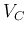
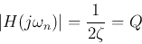
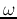
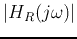
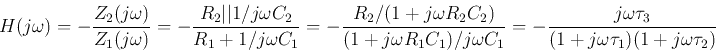

Next: About this document ...
Up: Bode
Previous: Bode Plots of Components
First order circuits

- Voltage  across C is treated as output. According to voltage
divider rule, we have:
where .
- Voltage
 across R is treated as output:
across R is treated as output:
As  can be written as:
can be written as:
The first term is just  . Now the log-magnitude is:
. Now the log-magnitude is:
The first term is the same as and the second plot is a straight line
with slope of 20 dB/dec. at
, the first term is -3 dB and the
second is 0 dB. The phase plot is:
In the plots below, , rad/sec.

Define
as the cut-off frequency, then when
,
we have  , and
, i.e.,
is the half-power point, where
, and
, i.e.,
is the half-power point, where  is -3 dB.
is -3 dB.
Second order circuits

- Voltage across C is treated as output:
where
The magnitude is
where
 . When
or
. When
or
 , we have
, we have

- Voltage across R is treated as output:
Now we have:
The log-magnitude of the second factor is a straight line with slope 20 dB/dec,
and at
, its value is
. The phase is
for all .
The denominator can be written as
, which is minimized
when the imaginary part is zero, i.e,
. In other words, when
,
 reaches its peak value.
- Voltage
 across L is treated as output:
across L is treated as output:
Now we have:
The log-magnitude of the second factor is a straight line with slope 40 dB/dec,
and at
, it's value is
. The phase is
for all .

In the following plots, rad/sec and .
At
,
dB, and
dB.

Example, a Band-pass filter:


where , , .
Next: About this document ...
Up: Bode
Previous: Bode Plots of Components
Ruye Wang
2018-07-23